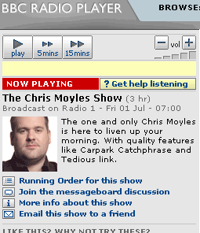
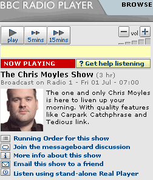

The aim of this script is to allow a user to launch an instance of RealPlayer (or whatever media player you use to play RealMedia files with)
for each item on the BBC iPlayer Radio Player 'back catalogue'.
Annoyingly links are only provied by the BBC for live programs for most stations *, so this script inserts a link to the rtsp stream that will
open in you preffered media player.
* - Most Radio 5 Live and BBC 7 shows have external links, I could exlude these in the script, but have left them in incase there aren't any links to a certain show. Maybe I will change the script to detect if a link is present and only show it if not.
NB:I have also made another script to add more navigation controls.
I made this after seeing a request on http://dunck.us/collab/GreaseMonkeyUserScriptRequest and seen as I wanted to learn more about writing Greasemonkey scripts I took up the request.
Getting the url of the ".rpm" file being played was easy enough, but then I had to use a "GM_xmlhttpRequest" to read that file to get the actual ".ra" source file otherwise Firefox would open a new window with an embedded Real Player Plugin.
Once the file is read a new div is added below the current links. As it has to read the file, it takes a few seconds to appear.
GreaseMonkey is an extension for Mozilla Firefox.
I Found Dive Into Greasemonkey very useful in learning how to make Greasemonkey scripts.
Before & After


Any Comments then email me @ 
Version 0.3 - For FireFox 3 and greasemonkey 0.8.x
----------------------------
14 June 2008!!
-----------------------------
Its been a while (2 1/2 years), but ive updated this to actually still work! Updated it to call itself the iPlayer radio player and tidied up the code a bit
-----------------------------
Version 0.25 - For FireFox 1.5 and Greasemonkey 0.6.4 only (may work on 1.0.x)
----------------------------
9 December 2005 PM
-----------------------------
Update for greasemonkey 0.6.4
-----------------------------
Version 0.23 - For FireFox 1.5RC1 and Greasemonkey 0.634 only (may work on 1.0.x)
----------------------------
4 November 2005 PM
-----------------------------
Fix for new firefox + greasemonkey, install older version on Firefox 1.0.x
-----------------------------
Version 0.22
----------------------------
22nd July 2005 PM
-----------------------------
Pauses playback of the embedded player when you click to load the External Player
-----------------------------
Version 0.21
----------------------------
7th July 2005 PM
-----------------------------
Made the div that appears once the "rpm" file has been read appear straight away to display the message "Getting External Link"
Also gives an error "Error getting Link" if the "rpm" file doesn't return ok, e.g error 404/500 etc
-----------------------------
Version 0.2
----------------------------
7th July 2005
-----------------------------
Checks if existing link exists (e.g BBC 7 & 5 Live archives) and only adds link if it is non-existant
-----------------------------
Version 0.1
----------------------------
6th July 2005
-----------------------------
Initial release